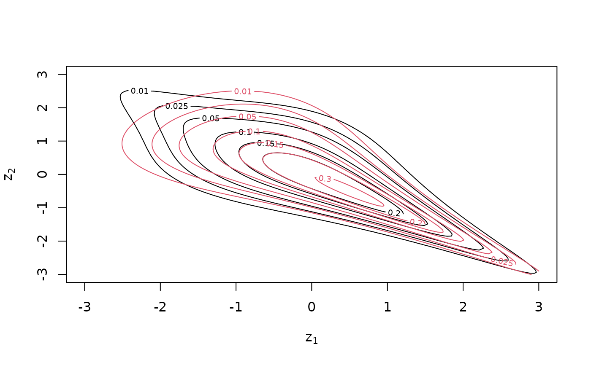

Fit a bivariate copula model for continuous or discrete data. The family can be selected automatically from a vector of options.
Arguments
- data
a matrix or data.frame with at least two columns, containing the (pseudo-)observations for the two variables (copula data should have approximately uniform margins). More columns are required for discrete models, see Details.
- var_types
variable types, a length 2 vector; e.g.,
c("c", "c")for both continuous (default), orc("c", "d")for first variable continuous and second discrete.- family_set
a character vector of families; see Details for additional options.
- par_method
the estimation method for parametric models, either
"mle"for maximum likelihood or"itau"for inversion of Kendall's tau (only available for one-parameter families and"t".- nonpar_method
the estimation method for nonparametric models, either
"constant"for the standard transformation estimator, or"linear"/"quadratic"for the local-likelihood approximations of order one/two.- mult
multiplier for the smoothing parameters of nonparametric families. Values larger than 1 make the estimate more smooth, values less than 1 less smooth.
- selcrit
criterion for family selection, either
"loglik","aic","bic","mbic". Forvinecop()there is the additional option"mbicv".- weights
optional vector of weights for each observation.
- psi0
see
mBICV().- presel
whether the family set should be thinned out according to symmetry characteristics of the data.
- allow_rotations
whether to allow rotations of the copula.
- keep_data
whether the data should be stored (necessary for using
fitted()).- cores
number of cores to use; if more than 1, estimation for multiple families is done in parallel.
Value
An object inheriting from classes bicop and bicop_dist . In addition to
the entries contained in bicop_dist(), objects from the bicop class
contain:
data(optionally, ifkeep_data = TRUEwas used), the dataset that was passed tobicop().controls, alistwith the set of fit controls that was passed tobicop().loglikthe log-likelihood.nobs, anintegerwith the number of observations that was used to fit the model.
Details
If there are missing data (i.e., NA entries), incomplete observations are
discarded before fitting the copula.
Discrete variables
When at least one variable is discrete, more than two columns are required
for data: the first \(n \times 2\) block contains realizations of
\(F_{X_1}(x_1), F_{X_2}(x_2)\). The second \(n \times 2\) block contains
realizations of \(F_{X_1}(x_1^-), F_{X_2}(x_2^-)\). The minus indicates a
left-sided limit of the cdf. For, e.g., an integer-valued variable, it holds
\(F_{X_1}(x_1^-) = F_{X_1}(x_1 - 1)\). For continuous variables the left
limit and the cdf itself coincide. Respective columns can be omitted in the
second block.
Family collections
The family_set argument accepts all families in bicop_dist() plus the
following convenience definitions:
"all"contains all the families,"parametric"contains the parametric families (all except"tll"),"nonparametric"contains the nonparametric families ("indep"and"tll")"onepar"contains the parametric families with a single parameter,
("gaussian", "clayton", "gumbel", "frank", and "joe"),
"twopar"contains the parametric families with two parameters, ("t","bb1","bb6","bb7", and"bb8"),"threepar"contains the paramtric families with three parameters, ("tawn"),"elliptical"contains the elliptical families,"archimedean"contains the archimedean families,"ev"contains the extreme-value families,"BB"contains the BB families,"itau"families for which estimation by Kendall's tau inversion is available ("indep","gaussian","t","clayton","gumbel","frank","joe").
Examples
## fitting a continuous model from simulated data
u <- rbicop(100, "clayton", 90, 3)
fit <- bicop(u, family_set = "par")
summary(fit)
#> Bivariate copula fit ('bicop'): family = bb7, rotation = 90, parameters = 1.48, 2.35, var_types = c,c
#> nobs = 100 logLik = 63.34 npars = 2 AIC = -122.67 BIC = -117.46
## compare fit with true model
contour(fit)
contour(bicop_dist("clayton", 90, 3), col = 2, add = TRUE)

## fit a model from discrete data
x_disc <- qpois(u, 1) # transform to Poisson margins
plot(x_disc)
 udisc <- cbind(ppois(x_disc, 1), ppois(x_disc - 1, 1))
fit_disc <- bicop(udisc, var_types = c("d", "d"))
summary(fit_disc)
#> Bivariate copula fit ('bicop'): family = tawn, rotation = 270, parameters = 0.56, 1, 7, var_types = d,d
#> nobs = 100 logLik = 36.43 npars = 3 AIC = -66.86 BIC = -59.05
udisc <- cbind(ppois(x_disc, 1), ppois(x_disc - 1, 1))
fit_disc <- bicop(udisc, var_types = c("d", "d"))
summary(fit_disc)
#> Bivariate copula fit ('bicop'): family = tawn, rotation = 270, parameters = 0.56, 1, 7, var_types = d,d
#> nobs = 100 logLik = 36.43 npars = 3 AIC = -66.86 BIC = -59.05